Blog #1
This is my first blog post... let's talk about summer!
After finishing up my internship at Varda and first graduate school semeseter, I had a one week nothing. It was pretty amazing, I got some rest and with all the time
I had I started this project and also (sort of) getting consistent with running again.
Coding is something I always stayed away from but I realized I actually really enjoy it. You can do so much with just the basics. Tools for work, creative projects like this
one, cool electronic hardware stuff, etc. etc.
Diving back to running, my sister had signed us up for a 5k bubble run that actually ended up being pretty great. I had fun and it was nice to complete a "real" running
goal but it did make me realize how out of shape I am. I've lost it... for now. I'm coming for that half-marathon next year!
As far as work goes, my internship has been pretty good. Aerospace Corp is kind of how I expected it to be, a lot of research and development work with the main con being
the slower corporate pace. I feel like in some ways it's not as exciting as it was in Rocket Lab or Varda because we're not reall building anything and the environment is
really calm and quiet most days but it's also pretty nice to only work 9 hours a day and to be working on projects that are research based and "a waste of money".
This summer has been a success in my book. I'm about done with my graduate linear algebra summer class, doing pretty well. I'm running again, something that slowly died out last
semeseter because of the hours I had to dedicate to school and work. I learned a ton about oscillating heat pipes which is finally a "break" into thermoFLUIDs though not exactly
what I had in my mind when thinking about my transition to the thermofluid sciences. OH, and how could I forget, I met THE Spacecraft Thermal Control legend, David Gilmore! One
of my coworkers has become quite a good friend/mentor and after telling him how badly I wanted to meet David, he made it happen. Got to grab lunch, ask him some thermal/Aerospace
questions, and just got to know him outside of the book. (Took a photo and he signed my copy of the book too! :D)
First blog, done !
 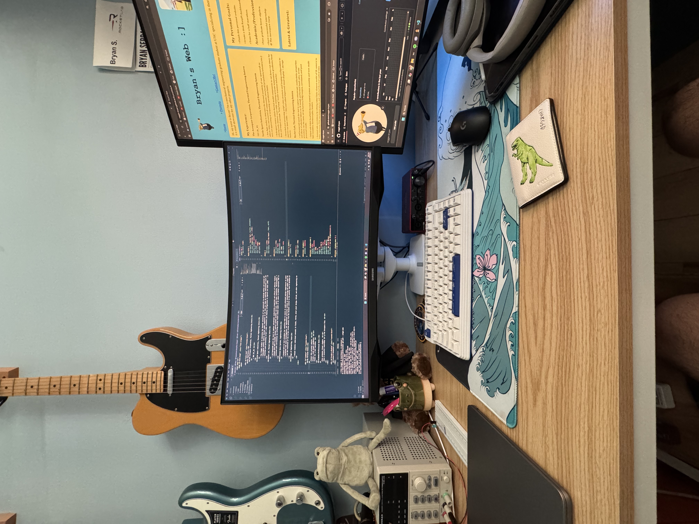
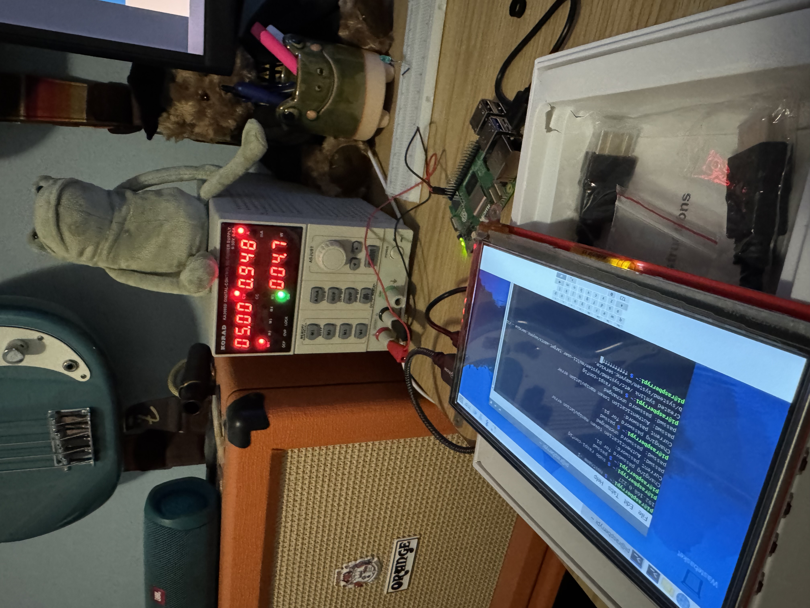
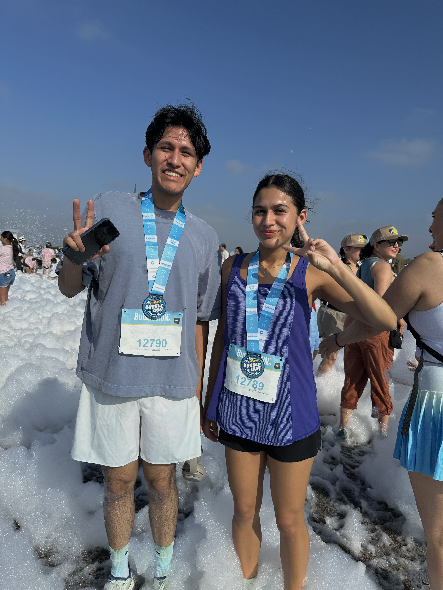
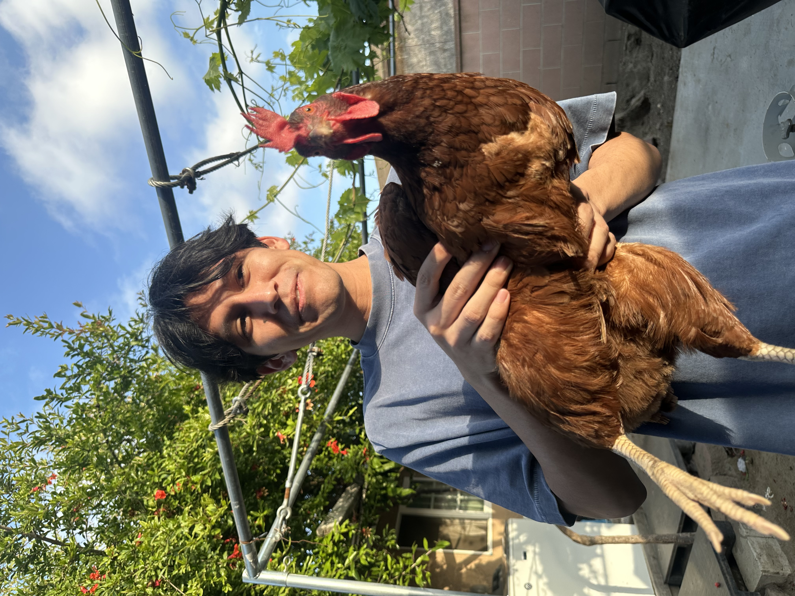
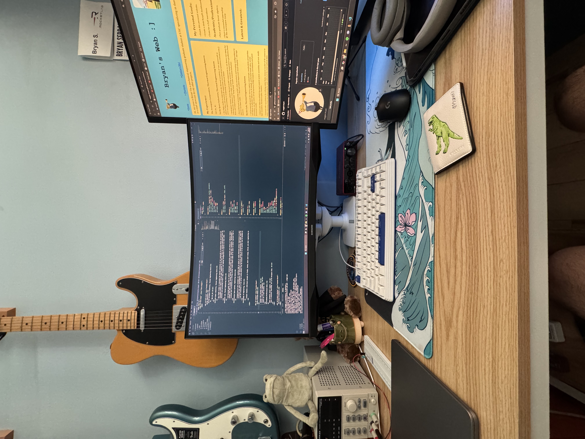
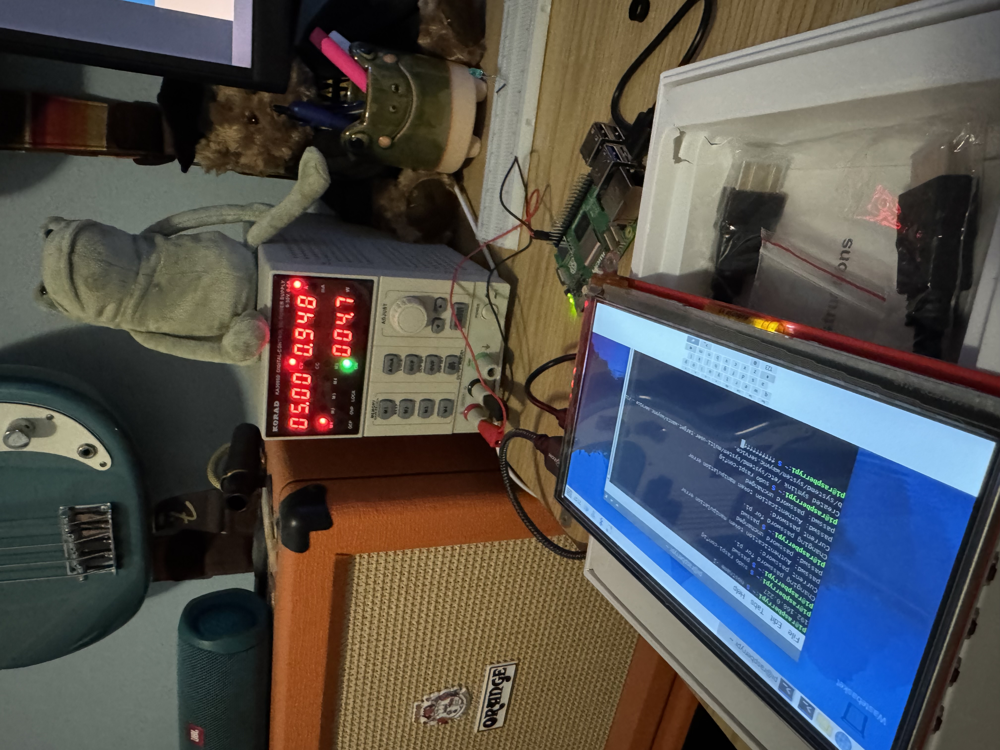
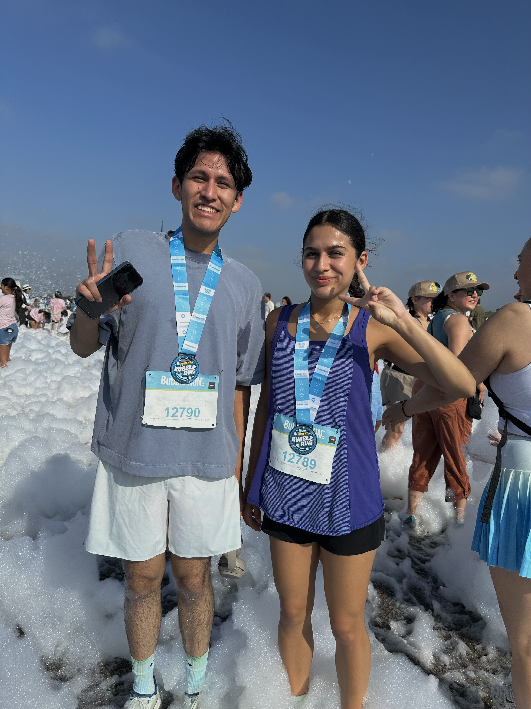
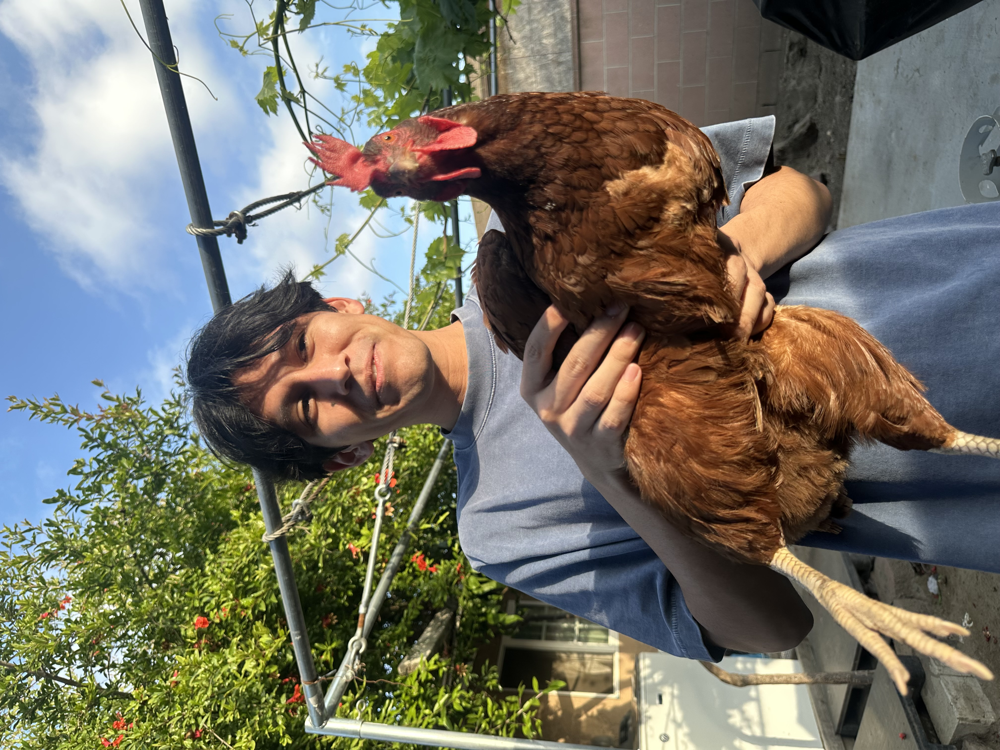
 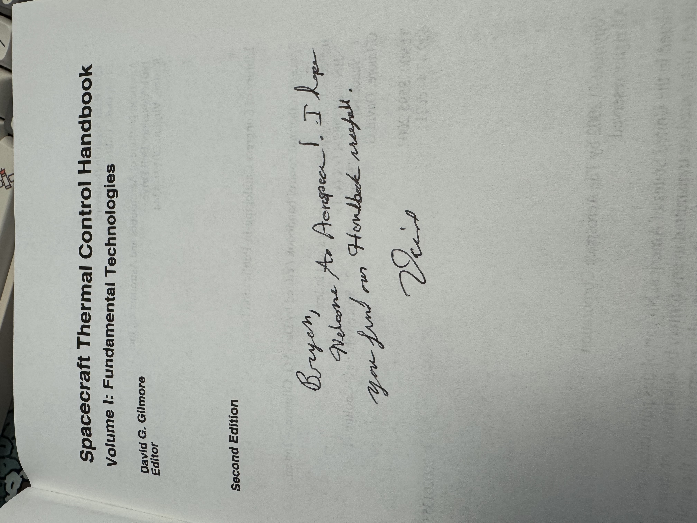
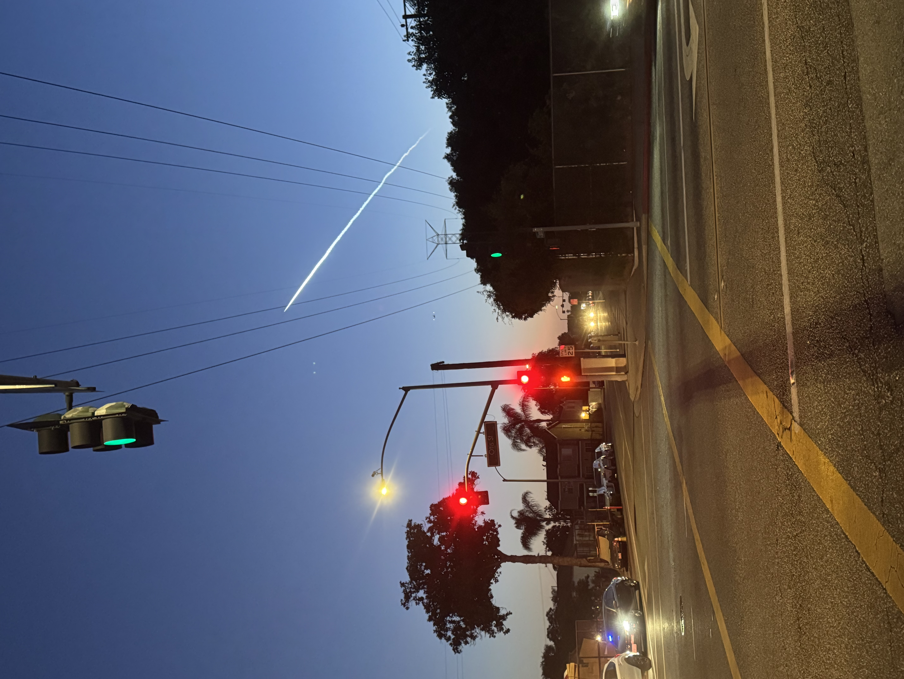
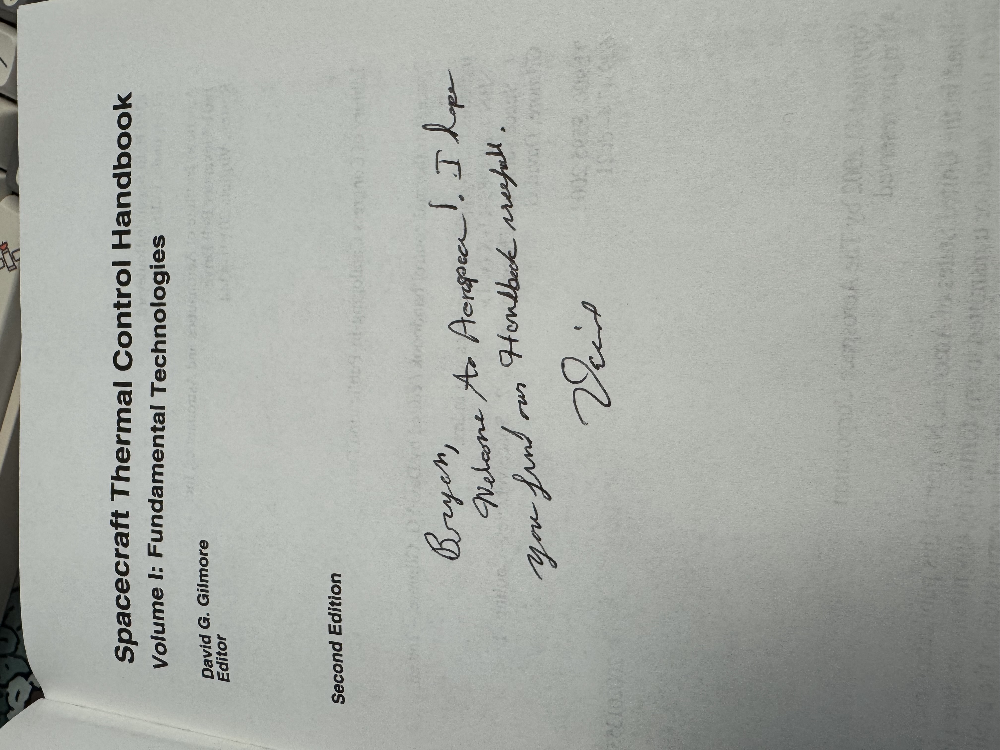
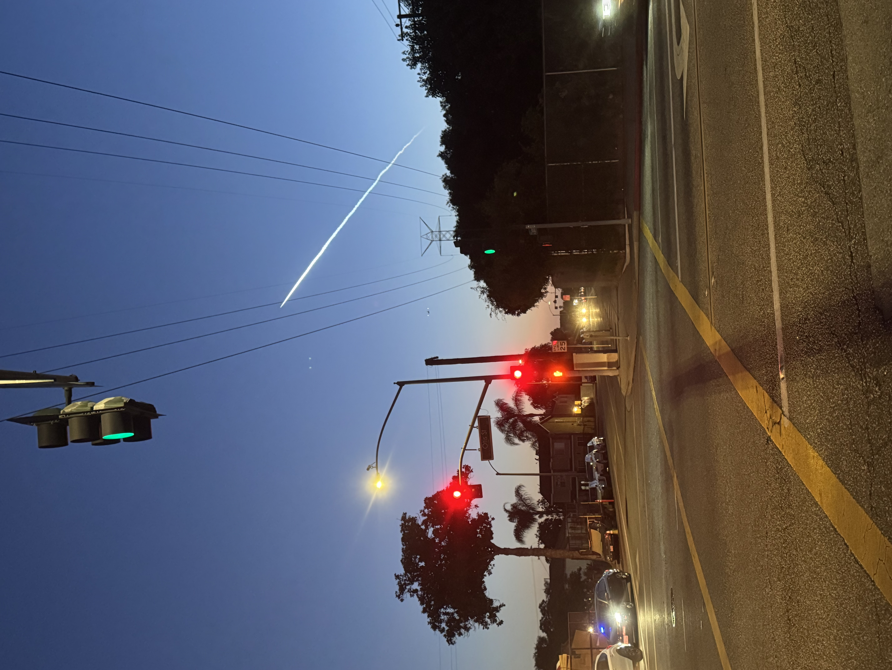